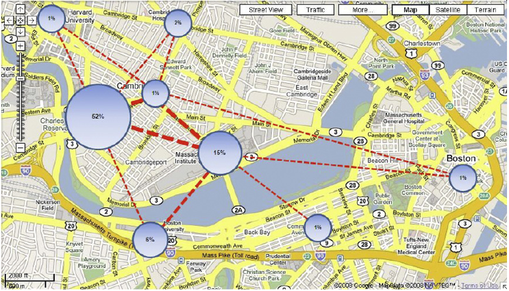

<!doctype html>
<html lang="en">
<head>
    <meta charset="utf-8" />
    <meta name="viewport" content="width=1024" />
    <meta name="apple-mobile-web-app-capable" content="yes" />
    <title>Presentation</title>

    <meta name="description" content="Presentation Of keePass Password Safe " />
    <meta name="author" content="Mohammad Sadr" />

    <link href="css/font.css" rel="stylesheet" />
    <link href="css/impress-demo.css" rel="stylesheet" />

    <link rel="shortcut icon" href="favicon.png" />
    <link rel="apple-touch-icon" href="apple-touch-icon.png" />
</head>
<body class="impress-not-supported">
<div class="fallback-message">
    <p>Your browser <b>doesn't support the features required</b> by impress.js, so you are presented with a simplified version of this presentation.</p>
    <p>For the best experience please use the latest <b>Chrome</b>, <b>Safari</b> or <b>Firefox</b> browser.</p>
</div>
<div id="impress">
    <div id="bored" class="step slide" data-x="0" data-y="0">
        <q style="font-size: 60px; line-height: 100px; margin-top:13%; line-spacing:1%;"><b>Mobility Profiler:</br>A framework for Discovering Mobility Profiles of Cell Phone users</b></q>
    </div>
    <div class="step slide" data-x="0" data-y="1000">
        <q style="line-height: 0px; text-align:left;margin-bottom:-20px;">
          <b>Index:</b>
        </q>
        <q style="line-height: 0px;text-align:left;padding-left:2em;">Preliminaries</q>
        <q style="line-height: 0px;text-align:left;padding-left:2em;">Mobility profiler</q>
        <q style="line-height: 0px;text-align:left;padding-left:2em;">Experimental results</q>
        <q style="line-height: 0px;text-align:left;padding-left:2em;">Related work</q>
        <q style="line-height: 0px;text-align:left;padding-left:2em;">Conclusion</q>
    </div>
    <div class="step slide" data-x="0" data-y="2000">
        <q style="margin-top:16%; line-height: 1px;">
          <b>Reality Mining data set:</b>
        </q>
        <q style="line-height: 1px;">100 people for the duration of 9 months</q>
        <q style="line-height: 1px;font-size:37px;">Not in terms of an exact longitude–latitude pair</q>
        <q style="line-height: 1px;">350 K h of monitoring time</q>
        <q style="line-height: 1px;">Database of 1 GB size</q>
    </div>

  	<div class="step" data-x="0" data-y="3000">
      <q style="margin-left: 16%;"></q>
      <br/>
      <q style="margin-left: 14%;">Mobility profiler Database</q>
    </div>

    <div class="step" data-x="0" data-y="4000">
      <q style="margin-left: 5%;"></q>
      <br/>
      <q style="margin-left: 14%;">Mobility profiler Framework</q>
    </div>

    <div class="step slide" data-x="0" data-y="5000">
      <q style="font-size: 40px;line-height: 10px;margin-top: 10%;"><b>Path construction phase:</b></q>
      <q style="line-height: 1px;">Cell Duration Time</q>
      <q style="line-height: 1px;">Cell Transition Time</q>
      <q style="line-height: 1px;">Observed End-Location</q>
      <q style="line-height: 1px;">Hidden End-Location</q>
      <q style="line-height: 1px;">Mobility Path</q>
    </div>
    <div class="step slide" data-x="0" data-y="6000">
        <q style="margin-top:25%; line-height: 1px;">
          <b>Cell Duration Time:</b>
        </q>
        <q style="margin-left: -1%;"></q>
        <br/>
        <q style="font-size:38px;margin-top: 1%;">Represent the connectivity information to a particular cell tower.</q>
    </div>
    <div class="step slide" data-x="0" data-y="7000">
        <q style="margin-top:25%; line-height: 1px;">
          <b>Cell Transition Time:</b>
        </q>
        <q style="margin-left: -1%;"></q>
        <br/>
        <q style="font-size:38px;margin-top: 1%;">Difference between the end and start time of two contiguous cell span record.</q>
    </div>
    <div class="step slide" data-x="0" data-y="8000">
        <q style="margin-top:25%; line-height: 1px;">
          <b>Observed End-Location:</b>
        </q>
        <q style="margin-left: -1%;">
    </div>
    <div class="step slide" data-x="0" data-y="9000">
        <q style="margin-top:25%; line-height: 1px;">
          <b>Hidden End-Location:</b>
        </q>
        <q style="margin-left: -1%;">
    </div>
    <div class="step slide" data-x="0" data-y="10000">
        <q style="margin-top:25%; line-height: 1px;">
          <b>Mobility Path:</b>
        </q>
        <br/>
        <q style="line-height: 50px;font-size:45px;margin-top: 1%;">An ordered sequence of cell tower ids corresponding to the cells that a user visited during her travel from one end-location to another.</q>
    </div>
    <div class="step" data-x="0" data-y="11000">
      <q style="margin-left: -18%;"></q>
      <q style="margin-left: -18%;"></q>
    </div>
    <div class="step slide" data-x="0" data-y="12000">
      <q style="margin-top:12%; line-height: 1px;">
        <b>Removing the oscillation effect:</b>
      </q>
      <q style="margin-left: -1%;">
    </div>
    <div class="step slide" data-x="0" data-y="13000">
        <q style="margin-top:25%; line-height: 1px;">
          <b>Topology construction:</b>
        </q>
        <br/>
        <q style="line-height: 50px;font-size:45px;margin-top: 1%;">Eliminate majority of candidate path sequences during the pattern discovery phase.</q>
    </div>
    <div class="step" data-x="0" data-y="14000">
      <q style="margin-top:12%; line-height: 1px;margin-left: -18%">
        <b>Pattern discover:</b>
      </q>
      <q style="margin-left: -18%;">
    </div>
    <div class="step slide" data-x="0" data-y="15000">
        <q style="margin-top:25%; line-height: 1px;">
          <b>Representing mobility profiles:</b>
        </q>
        <br/>
        <q style="line-height: 50px;font-size:45px;margin-top: 1%;">Personal mobility patterns with contextual time data and distribution of spatiotemporal locations for that user.</q>
    </div>
    <div class="step slide" data-x="0" data-y="16000">
      <q style="font-size: 40px;line-height: 10px;margin-top: 8%;"><b>Experimental results:</b></q>
      <q style="line-height: 1px;">Determining end-location thresholds</q>
      <q style="line-height: 1px;">Removing the oscillation effect</q>
      <q style="line-height: 1px;">Finding maximal mobility patterns</q>
      <q style="line-height: 1px;">Location prediction</q>
      <q style="line-height: 1px;">Other application areas of our framework</q>
    </div>
    <div class="step slide" data-x="0" data-y="17000">
      <q style="margin-top:12%; line-height: 1px;">
        <b>Determining end-location thresholds:</b>
      </q>
      <q style="margin-left: -1%";></q>
    </div>
    <div class="step slide" data-x="0" data-y="18000">
      <q style="margin-top:12%; line-height: 1px;">
        <b>Determining end-location thresholds:</b>
      </q>
      <q style="margin-left: -1%";></q>
    </div>
    <div class="step slide" data-x="0" data-y="19000">
      <q style="margin-top:12%; line-height: 1px;">
        <b>Removing the oscillation effect:</b>
      </q>
      <q style="margin-left: -1%";></q>
    </div>
    <div class="step" data-x="0" data-y="20000">
      <q style="margin-top:12%; line-height: 1px;margin-left: -18%">
        <b>Finding maximal mobility patterns:</b>
      </q>
      <q style="margin-left: -18%;">
    </div>
    <div class="step" data-x="0" data-y="21000">
      <q style="margin-top:12%; line-height: 1px;margin-left: -18%">
        <b>Finding maximal mobility patterns:</b>
      </q>
      <q style="margin-left: -18%;">
    </div>
    <div class="step slide" data-x="0" data-y="22000">
      <q style="margin-top:12%; line-height: 1px;">
        <b>Representing cell phone user profiles:</b>
      </q>
      <q style="margin-left: -1%;">
    </div>
    <div class="step slide" data-x="0" data-y="23000">
      <q style="margin-top:6%; line-height: 1px;">
        <b>Representing cell phone user profiles:</b>
      </q>
      <q style="margin-left: -1%;">
    </div>
    <div class="step slide" data-x="0" data-y="24000">
      <q style="margin-top:12%; line-height: 1px;">
        <b>Representing cell phone user profiles:</b>
      </q>
      <q style="margin-left: -1%;">
    </div>
    <div class="step slide" data-x="0" data-y="25000">
      <q style="margin-top:12%; line-height: 1px;">
        <b>Representing cell phone user profiles:</b>
      </q>
      <q style="margin-left: -1%; margin-top:50px;">
    </div>
    <div class="step" data-x="0" data-y="26000">

      <q style="margin-left: 0%;">
    </div>
    <div class="step slide" data-x="0" data-y="27000">
      <q style="margin-top:12%; line-height: 1px;">
        <b>Location prediction:</b>
      </q>
      <q style="margin-left: -1%;">
    </div>
    <div class="step slide" data-x="0" data-y="28000">
      <q style="font-size: 40px;line-height: 10px;margin-top: 20%;"><b>Other application areas of our framework:</b></q>
      <q style="line-height: 1px;">Air pollution exposure estimation</q>
      <q style="line-height: 1px;">Social networks web sites</q>
      <q style="line-height: 1px;">peer-to-peer server</q>
    </div>
    <div class="step slide" data-x="0" data-y="29000">
      <q style="font-size: 40px;line-height: 10px;margin-top: 10%;"><b>Related work:</b></q>
      <q style="line-height: 1px;">city-wide sensing applications</q>
      <q style="line-height: 1px;">CarTel systems</q>
      <q style="line-height: 1px;">Mobile Landscape</q>
      <q style="line-height: 50px;margin-top:55px;">Mining human behaviors and social networks analysis</q>
    </div>
    <div class="step slide" data-x="0" data-y="30000">
      <q style="font-size: 40px;line-height: 10px;margin-top: 18%;"><b>Related work:</b></q>
      <q style="line-height: 50px;margin-top:55px;margin-bottom:-40px;">Personal GPS data for determining daily actives</q>
      <q style="line-height: 1px;">Identifying important locations</q>
      <q style="line-height: 1px;">Finding transportation routes</q>
    </div>
    <div class="step slide" data-x="0" data-y="31000">
        <q style="margin-top:16%; line-height: 1px;">
          <b>Conclusion:</b>
        </q>
        <q style="line-height: 1px;">350 K h real data</q>
        <q style="line-height: 50px;margin-top:55px;">Approximately 15% of a person’s time is spent in a large variety of locations each of that takes less than 1% time.</q>
    </div>
</div>
<script>
if ("ontouchstart" in document.documentElement) {
    document.querySelector(".hint").innerHTML = "<p>Tap on the left or right to navigate</p>";
}
</script>
<script src="js/impress.js"></script>
<script>impress().init();</script>
</body>
</html>
